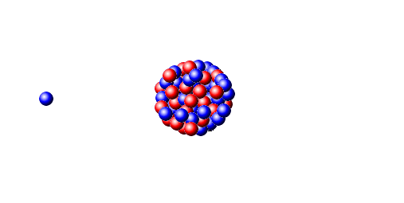

nuclear energy
Atoms are tiny particles inside molecules that form gas, liquid and solids. Atoms themselves include electrons, protons and neutrons. Each atom has a nucleus that contains protons and neutrons and is surrounded by electrons. As you know, protons have a positive charge, electrons have a negative charge, and neutrons have a neutral charge. There is a lot of energy in the nucleus that makes the components of the nucleus stay together. This energy is released when the bond between the nuclear components is broken. The name of this released energy is nuclear energy or atomic energy. This bond can be broken by nuclear fission, and the energy from fission can be used to generate electricity. Nuclear fission is the process of splitting nuclei (usually large nuclei). When large nuclei such as uranium-235 fission, energy is released from this process.

The fission process generally occurs when a low-energy thermal neutron hits a large, relatively unstable nucleus.